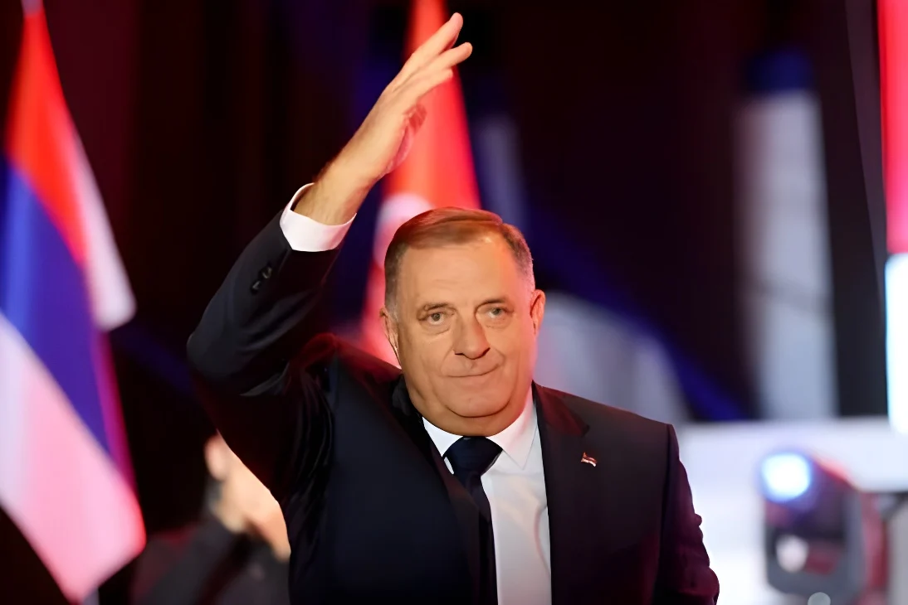

Le 4 octobre 2026, 3,4 millions d'électeurs étaient appelés à renouveler la présidence collégiale, les parlements et les exécutifs des deux entités du pays. Selon les résultats provisoires, la participation, d'environ 40 %, est un record de faiblesse ; les partis nationalistes serbes et croates sortent renforcés, et le SNSD de Milorad Dodik, écarté de ses fonctions après sa condamnation, revendique la victoire en Republika Srpska.
Dimanche 4 octobre 2026, la Bosnie-Herzégovine a voté pour renouveler sa présidence collégiale, ses parlements et les exécutifs de ses deux entités, la Fédération croato-musulmane et la Republika Srpska, issues des accords de Dayton de 1995. Pour la première fois dans tout le pays, l'identification biométrique des électeurs par empreinte digitale et des scanners de bulletins ont été utilisés pour lutter contre la fraude, avec peu d'incidents signalés.
Le résultat provisoire, établi à partir d'environ 96 % des bureaux dépouillés, retient surtout un chiffre : seuls 40,3 % des 3,4 millions d'électeurs se sont déplacés, soit environ dix points de moins qu'en 2022. Les trois sièges de la présidence reviennent à des candidats des grands partis communautaires, et la certification officielle des résultats reste attendue.
| Siège | Élu(e), score provisoire |
|---|---|
| Bosniaque | Denis Bećirović (SDP), 38,17 %, devant Bakir Izetbegović (SDA), 34,04 % |
| Croate | Darijana Filipović (HDZ BiH), 46,63 %, devant Slaven Kovačević (DF), 30,47 % |
| Serbe | Željka Cvijanović (SNSD), 55,45 %, devant Marinko Božović (SDS), 26,48 % |
Résultats provisoires à environ 96 % de dépouillement ; la certification officielle est attendue.
Jour du scrutin ; Milorad Dodik revendique la victoire de son parti et remercie Donald Trump et Vladimir Poutine.
Dodik, inéligible, se rend à Moscou et y rencontre Vladimir Poutine.
Élection anticipée de la présidence de la Republika Srpska, après le retrait du mandat de Dodik.
Dodik est condamné à un an de prison pour avoir défié le Haut représentant international.
La Bosnie-Herzégovine obtient le statut de candidat à l'Union européenne.
Les accords de Dayton mettent fin à la guerre et créent le système institutionnel actuel.
Le grand gagnant politique du scrutin ne figurait sur aucun bulletin. Milorad Dodik, chef de l'Alliance des sociaux-démocrates indépendants (SNSD), a été condamné en février 2025 puis écarté de ses fonctions : il ne pouvait donc pas se présenter. Mais sa candidate, Željka Cvijanović, conserve confortablement le siège serbe de la présidence, et son parti garde la haute main sur la Republika Srpska ; selon la presse balkanique, son allié Savo Minić, chef du gouvernement de l'entité, est en position de lui succéder à la présidence.
Devant ses partisans, Dodik a lancé que « personne ne doit nous demander de changer notre politique », en remerciant Donald Trump et Vladimir Poutine. Il attribue en partie sa réussite à la levée par Washington des sanctions qui le visaient, lui et ses proches. Pendant la campagne, il avait aussi déclaré que la Bosnie était un pays « impossible », sans raison d'être.
« Sans la magnifique victoire de Trump, nous serions probablement politiquement morts aujourd'hui. »
— Milorad Dodik, 4-5 octobre 2026 (traduction)À la Chambre des représentants, le SDA, parti bosniaque d'Izetbegović, arrive en tête avec 19,94 % des voix, devant le SNSD (16,64 %). Aucun bloc n'approche la majorité : une coalition doit réunir 22 des 42 sièges. Bakir Izetbegović, battu pour la présidence, a reconnu que son résultat personnel était moins bon que celui de son parti.
Une participation aussi basse n'a pas déstabilisé les partis nationalistes : elle les avantage, car leurs électeurs, disciplinés, se mobilisent quoi qu'il arrive, tandis que les électeurs désabusés restent chez eux. Dans un système où chaque siège est réservé à une communauté, le vote devient un réflexe d'appartenance plus qu'un choix de programme. Dodik en tire une légitimité renouvelée, adossée à Washington comme à Moscou, alors que Sarajevo reste suspendue à une adhésion européenne que personne ne semble pressé de conclure.